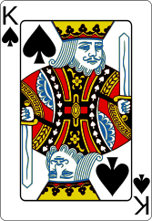

Select a game to launch
The classic 7-column experience. Build down in alternating colors and stack foundations by suit.

Open-board strategy with 4 free cells. Classic numbered deals, adjustable difficulty.
Clear three overlapping peaks by picking cards one rank higher or lower than the waste pile.
Fast-paced card matching. Clear 35 tableau cards onto the waste pile in sequential order.
7 tableau stacks with ascending face-down cards topped with face-up runs. Build foundations up by suit.
Pair exposed cards that sum to 13 to clear the pyramid — Egyptian-themed, unlimited waste-pile cycling.